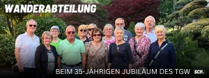
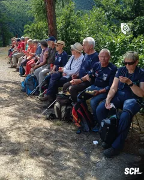
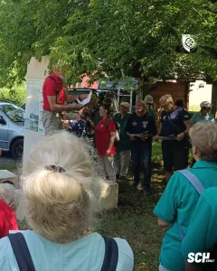
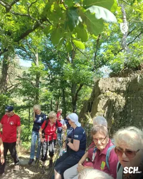
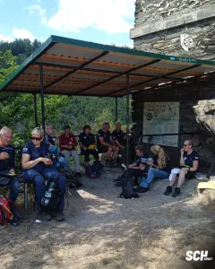
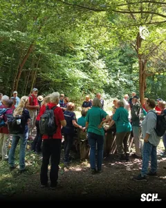
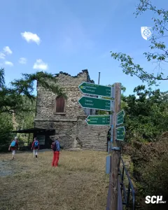
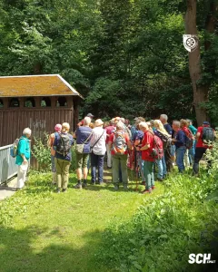
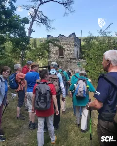

← Alle News der Abteilung Wandern

+++ Wanderabteilung beim 35-jährigen Jubiläum des TGW +++
Ein besonderer Moment für unsere Wanderabteilung
Im Rahmen der Feierlichkeiten zum 35-jährigen Jubiläum des Thüringer Gebirgs- und Wandervereins e.V. (TGW) durfte unsere Wanderabteilung einen ganz besonderen Moment erleben. Mit herzlichen Worten würdigten TGW-Präsident Knut Korschewsky und TWV-Präsidentin Christine Lieberknecht das Engagement und den Mut unserer Abteilung, im Jahr 2024 als Ausrichter des 122. Deutschen Wandertages in Heilbad Heiligenstadt aufzutreten.
Lob, das unter die Haut geht
„Wir sind stolz darauf, dass auch dieser Wandertag von einem Verein aus der TGW-Familie getragen wurde“, sagte Knut Korschewsky und hob damit den außergewöhnlichen Einsatz unseres jungen Vereins hervor. Christine Lieberknecht betonte in ihrer Rede: „Ich staune immer wieder, wie diese noch junge Abteilung die enormen Aufgaben so souverän gemeistert hat.“
Ein Satz, der berührt – denn die Abteilung Wandern des 1. SC 1911 Heiligenstadt e.V. wurde erst 2021 gegründet. Dass sie nur wenige Jahre später das größte Wanderereignis Deutschlands ausrichtete, ist ein starkes Zeichen für Pioniergeist, Teamarbeit und ehrenamtliches Engagement.
Ein Wandertag mit nachhaltiger Wirkung
Der 122. Deutsche Wandertag 2024 in Heilbad Heiligenstadt war mehr als ein Event – er war ein Ausdruck von Heimatverbundenheit, Gastfreundschaft und dem, was gemeinschaftliches Engagement bewegen kann. Er hat nicht nur das Image Thüringens als Wanderland gestärkt, sondern auch weit über die Grenzen der Region hinaus positive Spuren hinterlassen.
Diese Anerkennung erfüllt uns mit Stolz – und mit Dankbarkeit gegenüber all jenen, die diesen Weg mit uns gegangen sind.
Mit Blick nach vorn – die Wimpelstafette ruft
Ein schöner Gedanke, der zum Abschluss mit auf den Weg gegeben wurde: Als Ausrichter des letzten Deutschen Wandertags sind wir eingeladen, den Staffelstab – die Wimpelstange – weiterzutragen. Symbolisch und sportlich zugleich werden wir diesen Weg antreten und ihn bis zum nächsten Austragungsort in Oberwiesenthal in mehreren Etappen erwandern.
Eine Reise, die verbindet – und die zeigt, was gemeinsam möglich ist.







